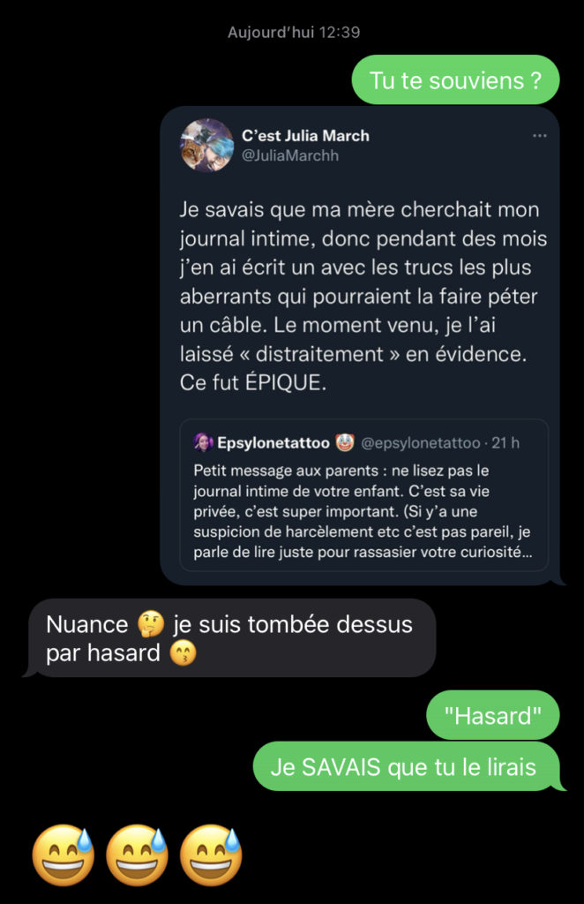

Neuranatomie #4
Le schéma
Ce fait n’aura échappé à personne, seulement, je vais mettre les mots dessus, afin de crever l’abcès : les maniaques du contrôle adorent travestir leur névrose. Ce n’est pas un péché capital, après tout, le monde étant chaotique, il n’est pas étonnant que des individus cherchent à le soumettre à un ordre rigoureux. Ce qui est un péché capital, en revanche, c’est de travestir sa névrose en vertu, voire en “militantisme”. C’est de ne pas avoir compris, à un certain âge, que les émotions et comportements d’autrui vous échapperont toujours. C’est de chercher à soumettre l’autre à l’ordre que vous avez décidé de vous imposer, par tous les moyens possibles : chantage affectif, menaces, harcèlement, violence, usure psychologique.
Du point de vue du control freak, cela s’apparente à une belle bataille contre “l’oppresseur” désigné. Tout un système de valeur incarné par une seule et même personne, qu’il faut abattre.
Vu de l’extérieur, c’est triste.
Si vous vous reconnaissez dans ces mots, je ne peux rien pour vous. La bonne nouvelle, c’est que vous, vous y pouvez quelque chose.
La cervelette
Je voue une passion démesurée aux histoires d’arnaques et de faux-semblant. Après tout, j’ai grandi dans une secte millénariste qui s’est entièrement construite sur des bobards et sur la réécriture de l’Histoire. Étant incapable de jouer un rôle pour tromper mon semblable – un trait que je regrette amèrement car ma vie serait probablement plus simple–, j’ai toujours trouvé d’autres moyens ingénieux de troller mon prochain.

Extrait d’une conversation avec ma mère, au sujet d’un piège que je lui ai tendu quand j’avais 13 ans.
Cependant, d’autres sont doués, et je pèse mes mots. Là où le public est outré, je suis admirative des gens qui parviennent à duper des inconnus pendant une longue période. C’est donc en toute logique que je me suis plongée à corps perdu dans la série “La mythomane du Bataclan” sur Les Jours , adapté du récit d’Alexandre Kaufmann publié aux éditions de La Goutte d’Or.
Je suis fébrile, je trépigne d’impatience, le CM de Les Jours va finir par me bloquer sur Twitter, mais cette histoire m’obsède et me fascine. Comment peut-on avoir le sang-froid nécessaire pour infiltrer une association de victimes du terrorisme et mentir comme un arracheur de dents à des fins monétaires ? C’est incroyable. INCROYABLE.
La dopamine
Il n’y a pas d’autre pouvoir que celui des mots. Ceux qui croient avoir du pouvoir parce qu’ils dirigent une entreprise, un pays, une région, eux ne produisent que du vent quand ils ouvrent la bouche. Ils ont construit leur univers sur du sable. Le pouvoir, c’est de parler vraiment. De dire les choses.
Hadrien Klent, Paresse pour tous
La sérotonine
Cliquez sur l’image pour aller voir les illustrations de Dao Nguyen